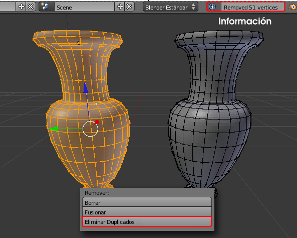

Eliminar duplicados
El problema de la costura es consecuencia de que los vértices del perfil se han duplicado al hacer un giro completo de 360º. En más de una ocasión hemos hecho referencia al tema de los puntos dobles y parece que ya se ha manifestado uno de los problemas que pueden dar.
Hay que deshacerse de ellos inmediatamente:
- Seleccionamos todos los vértices de la malla "A".
- En el cuadro de Herramientas "T" pulsamos la opción Eliminar duplicados (o Malla/Vértices/Eliminar duplicados).

Tal y como puede comprobarse en la imagen anterior, en el momento de la edición se nos informa del número de puntos dobles que había en la malla (realmente en los vértices seleccionados) y que han sido eliminados. En el caso de la ánfora se trataba de 51 puntos.
Si se trataba de un perfil hecho con 28 puntos ¿Por qué crees que sale una cifra final de 51 puntos duplicados?